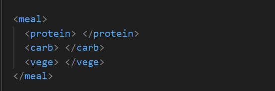
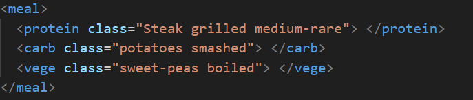

The DOM is a data representation of the objects that make up the structure and content of a website. It is a programming interface allowing code to change the structure, style and content of said website. The DOM is constructed as a tree of objects with objects only ever having one parent. There is a core DOM API that defines the entities and then the capabilities are further expanded upon by other APIs.
The DOM effectively acts as the glue that links Javascript, CSS and HTML together.
HTML, CSS and Javascript is like an experience at a restaruant. For this analogies sake, we have to pretend we are horrible people and an incredibly picky eater. You are at a restaruant and your food has just been served to you on a beautiful plate. The plate is the DOM. Here we have...
HTML, the food, the basic ingredients that sit on your plate. For example, chicken, micro-greens etc
CSS, how the plate is presented, the flourish, the type of nutrients, the use of different colours and how they are placed together on plate.
JavaScript, where the magic happens, it is what the chef and waiters is doing in the restaruant.You want an extra steak medium raw? You want to replace the meat for a vegan friendly katsu panko fried tofu? No problem. JavaScript allows you to ask the chef to change your what’s on your plate. It can change what is on your plate (structure, HTML) or change the display so your meat doesn’t touch your peas (style, CSS)
Lets look at the our restaruant example. When you asked the waiter to swap the protein for a vegan friendly tofu the following actions can be defined as JavaScript. Initially the waiter would start a function called listenToCustomer(). Within the function, it may take what the customer asks for and put it through a conditional statement, for example, is it possible?
Javascript has effectively two conditional structure. There is the "if" and "switch" structure. The if structure has several syntax that can be used in conjunction with the if statement. This inlcudes the
if(condition) if the condition yields true, the program does something
if(condition) else.... This is basically the same as the if statement but with a distinct action when the condition is not met.
if(condition) else if (condition) This is a combination of the two above where the else will only execute if another condition is met.
These if statements can be nested ontop of each other however if there is many conditions, you could also use another conditional structure called 'switch' . The switch statement is evaluated once and the result of the statement is compared to the values of each value. If there is a match, the program will excute the code within the associated block of code.
JavaScript also has several loop structures. Some are:
The loop structures are used to repeat actions that are completed over and over again. In our example, our waiter may be running a loop to checkon all customers before returning to the kitchen. He might iterate (visit) all the table on the restaruant floor.
Well a function is a set of actions that you might need to do again. The actions are package in a function so the programmer does not have to rewrite the code everytime he needs it. In our example, the waiter checking up on the tables is the function and within the function is where the conditional and loop statements may live.